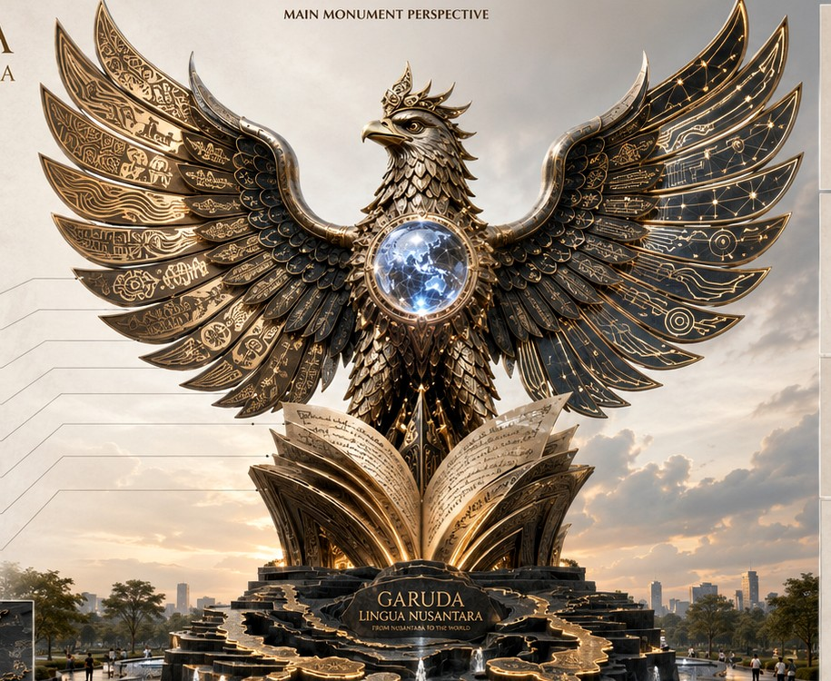

01
01Archipelagic Base
Nusantara as multilingual memory, cultural plurality, maritime connection, and local knowledge rising into global scholarship.
Integrated Garuda–Nusantara Learning Monument
An interactive scholarly monument where Garuda, manuscript, luminous orb, wings, and archipelagic base become connected learning routes for language education, pronunciation, intelligibility, AI literacy, ESP, digital learning, ethics, and heritage.

Design Philosophy
The design is read as an academic landscape. Each part of the monument carries a learning function, a symbolic meaning, and a field-based route for visitors, students, lecturers, and international audiences.
01Nusantara as multilingual memory, cultural plurality, maritime connection, and local knowledge rising into global scholarship.
 02
02Teaching, curriculum design, academic writing, publication culture, and classroom knowledge made visible.
Intellectual dignity, ethical guardianship, responsibility, and the moral foundation of research-based education.
 04
04Shared meaning, global intelligibility, intercultural communication, and international collaboration.
 05
05Accent diversity, ELF pronunciation, rhythm, stress, speaking confidence, and intelligible communication.
 06
06AI literacy, responsible prompting, digital pedagogy, AR interpretation, and human-centered educational technology.
Monument Spots
Use the rotation controls or select a philosophy-based spot. The selected route opens learning materials, compact QR access, narration, and assessment.
Learning Studio
Each route contains learning outcomes, input material, listening/speaking/reading/writing tasks, vocabulary and discourse practice, formative assessment, reflection, and field transfer.
Voice Map
Select a province on the Garuda-themed Indonesia map. Each province opens a voice prompt, learning field connection, province-based task, speaker, local recording, and module access.
Scholarly Dossier
The platform frames the monument as a research-informed public artwork, learning station, and digital heritage system connected to language education and international scholarly contribution.
Dr. Joko Slamet
English Language Teaching, Linguistics, ESP, Technology-Enhanced Language Learning, AI-supported learning, research and development, and scholarly publishing.
Transforms Garuda–Nusantara symbolism into an interactive learning architecture that promotes intelligibility, ethical scholarship, multilingual heritage, and responsible educational technology.
The work connects Indonesian cultural identity with global issues in English as a Lingua Franca, AI literacy, digital learning, ESP, intercultural intelligibility, and public pedagogy.
Admin / Lecturer Dashboard
Use the protected workspace to manage module materials, assessment items, province voice prompts, field connections, and local backup data.
Management Console